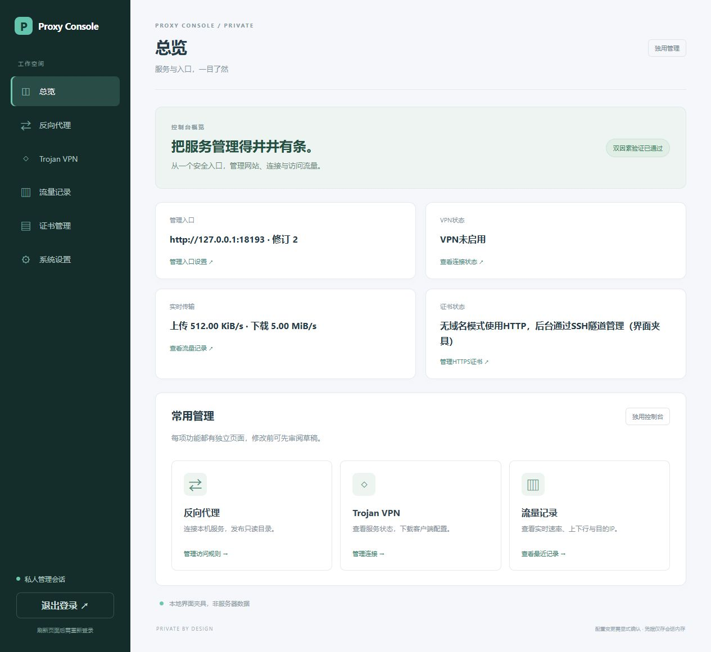
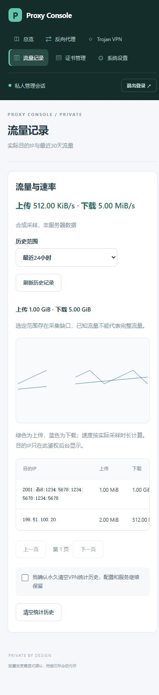

页面结构
采用固定侧栏、页面标题和独立内容区；移动端改为顶部可换行菜单。六个菜单为：总览、反向代理、Trojan VPN、流量记录、证书管理、系统设置。总览只显示聚合状态和快捷入口，目的IP仅在流量页显示。
导航与数据边界
使用同一应用内的hash页面路由，支持前进/后退与深链接，不在URL中放凭据。菜单切换保留未提交草稿和内存会话，不触发配置写入或重复登录。刷新仍按原安全模型重新登录；退出/会话失效隐藏全部功能并清除敏感显示。证书导入与系统设置共享域名草稿，明确提示跨页面的操作顺序。
实施和验收
- 保留现有表单ID和业务模块，重组静态结构，新增独立导航模块；统一间距、表格、按钮、状态卡及登录页样式。
- 验证全部菜单、浏览器前进后退、非法hash回总览、菜单切换保留草稿、退出不可访问功能页；验证未勾选确认仍拒绝危险操作。
- 使用合成数据检查桌面和窄屏布局、键盘焦点与无横向溢出；记录截图及Go嵌入资源检查。
本地六页导航、草稿保留、退出隔离、危险操作确认及窄屏布局已验证。候选门槛通过后仅升级control，保留网关与VPN进程。原长稳已有6次HTTP状态异常，部署前保存失败证据并结束失效的旧基线；本改版不把这些异常标记解决，后续需定位并重开完整观察。
界面验证
正反向界面验收记录，截图使用合成数据。

